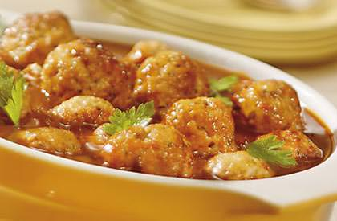
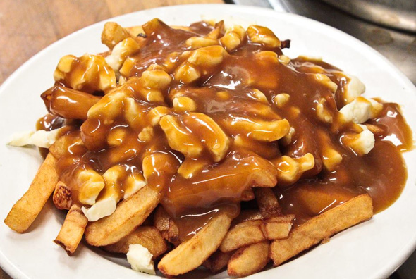
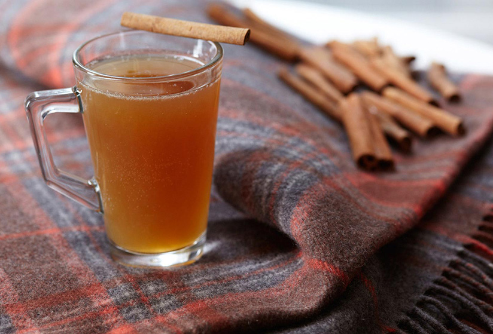

Quebec Food and Drink
Québec proudly reflects a tradition of French culture, never more so than in the restaurants
and cuisine of the province. French food here is as excellent as in Europe. Immigrants from many
countries provide a vast selection. English, Greek, Italian, Japanese and Spanish cuisines are
all available in Montréal and Québec. You can find international menus at all the larger hotels,
but are likely to come across the best food by wandering around the backstreets of the cities and
sampling the small but excellent restaurants scattered throughout both cities. The Île d'Orléans
is an island northeast of Québec City that provides abundant fruit and vegetables for the city.
Québec follows French tradition in having excellent standards of wine and spirits to complement
the highstandards of cuisine.
Specialities:
- Pork dishes such as ragoût de boulettes (pork meatballs with seasoning), cretons du Québec
(chilled minced pork), and beans and pork baked in maple syrup.
- Poutine (French fries with cheese curds and gravy).
- Game, such wild boar, venison, and even caribou and wapiti (deer).
- Tarte au sucre (maple sugar pie).
Regional drinks:
Wines and spirits based on maple syrup are a speciality of the region, among them maple cider and
maple whiskey. Apple, strawberry and other fruit wines from the Eastern Townships and other parts
of Québec are widely available.



Poutine
Make french fries as usual.
Sprinkle Cheddar cheese curds over the top of the hot fries. ( Curds are sometimes replaced by Mozzarella curds
or shredded cheddar or mozzarella cheese. Not the true thing though!)
Pour hot brown gravy over the top of the fries and curds. ( People use homemade or canned & some even use BBQ Sauce.)
"Poutine Sauce" is sold in grocery stores.)
Maple cider
1 gallon apple cider (unpasteurized is best)
2 cups maple syrup (use Grade B)
Pour out two cups of the apple cider to make room for the syrup. Combine the cider and maple syrup in a carboy, cap with an
airlock, and allow to ferment naturally. It can help to gently warm the mixture so that the syrup combines with the cider,
but I didn’t really have a problem with it, and periodically shook or swirled the jug to mix.
When the airlock stops bubbling, and the hydrometer reading stops declining, rack into bottles and let age at least 1 month.